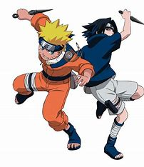

L'Enfance et les Débuts (Naruto)
Au début de la série Naruto, le personnage principal est un jeune orphelin mal-aimé du village de Konoha. Son enfance est marquée par la solitude et le rejet des habitants, qui le craignent à cause du démon renard à neuf queues, Kyûbi, scellé en lui à sa naissance. Malgré cela, Naruto fait preuve d’une énergie débordante et d’un optimisme inébranlable. Son rêve ultime : devenir Hokage pour prouver sa valeur et obtenir la reconnaissance du village.
En tant que genin, Naruto est initialement perçu comme un ninja maladroit et impulsif. Cependant, grâce à son travail acharné et à ses mentors comme Iruka et Kakashi, il commence à s’améliorer. Son premier véritable exploit est sa victoire contre Neji lors de l’examen chūnin, où il démontre que le destin n’est pas figé et que la volonté peut tout changer.
Sa rivalité avec Sasuke est également un élément central de son développement. Il considère Sasuke à la fois comme un ami et un frère, mais l’ambition de ce dernier de venger son clan les conduit à s’affronter violemment. Après leur combat final à la Vallée de la Fin, Sasuke quitte Konoha, ce qui devient l’une des plus grandes blessures émotionnelles de Naruto. Il décide alors de s’entraîner plus dur pour devenir assez fort pour ramener son ami.